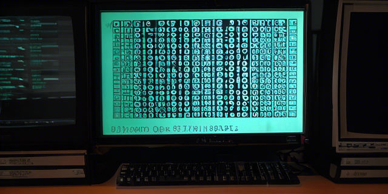

문자열 인코딩 문제

1 인코딩이란 무엇인가?
문자 인코딩은 원시 바이너리 바이트 문자열 (예: 0110100001101001) 을 사람이 읽을 수 있는 텍스트 (예: “hi”) 로 매핑하기 위한 특정 규칙 집합입니다. 문자 인코딩은 다양하기 때문에 원래 작성된 인코딩과 다른 인코딩으로 텍스트를 읽으려고 하면 모지바케이 (mojibake; 알수 없는 문자로 변환) 라는 현상이 발생합니다.1 모지바케이의 예시:
æ–‡å—化ã??
��������최근에는 문자 인코딩 불일치 문제가 예전보다 덜하지만 여전히 문제가 되는 것은 분명합니다. 문자 인코딩에는 여러 가지가 있지만 여러분이 알아야 할 주요 인코딩은 UTF-8 뿐 입니다. UTF-8 은 표준 텍스트 인코딩입니다. 모든 Python 코드가 UTF-8 로 되어 있고 이상적으로는 모든 데이터도 그래야 합니다. 왜냐면 항상 UTF-8 이 아닐 때 문제가 발생하기 때문이죠.
Python 으로 문자열 데이터를 다룰 때는 보통 두 가지 주요 데이터 유형을 접하게 됩니다. 하나는 우리가 일반적으로 사용하는 문자열이고 다른 하나는 정수로 이루어진 시퀀스, 즉 바이트 입니다. 바이트 객체는 앞에 b 가 붙고, 뒤에 문자열 데이터가 있습니다. 파이썬으로 문자열 데이터의 인코딩과 디코딩을 하는 코드 예시를 살펴보죠.
# 문자열로 시작
before = "This is the euro symbol: €"
# 데이터 유형 확인
type(before)
# 다른 인코딩으로 변환, 오류 발생 시 대체 문자 사용
after = before.encode("utf-8", errors="replace")
# 데이터 유형 확인
type(after)올바른 인코딩으로 다시 변환하면 문자열가 정상적으로 표시됩니다.
# UTF-8로 다시 변환
print(after.decode("utf-8"))이제 문자열 데이터를 ASCII 로 인코딩하고 다시 디코딩하는 예시를 살펴봅니다. 유로화 기호 (€) 는 ASCII 로 처리할 수 없어서 디코딩할 때도 문자가 유실됩니다.
# 문자열로 시작
before = "This is the euro symbol: €"
# ASCII로 인코딩
after = before.encode("ascii", errors="replace")
# 다시 UTF-8로 변환
print(after.decode("ascii"))
# 원본 바이트 문자 유실!위의 예시처럼 원본 문자를 잃게 되면 되돌리기 어렵습니다. 따라서 문자열는 가능한 한 빨리 UTF-8 로 변환해 저장하는 것이 좋습니다.
2 인코딩 문제 해결하기
대부분의 파일은 UTF-8 로 인코딩되어 있지만, 가끔 다른 인코딩으로 된 파일을 마주할 때도 있습니다.
# UTF-8이 아닌 파일을 읽으려고 시도
kickstarter_2016 = pd.read_csv("../input/kickstarter-projects/ks-projects-201612.csv")UnicodeDecodeError: 'utf-8' codec can't decode byte 0x99 in position 7955: invalid start byte이 오류는 파일이 UTF-8 이 아님을 알려줍니다. 이를 해결하는 한 가지 방법은 여러 인코딩 방식을 시도해보는 것이지만, charset_normalizer 모듈을 사용해 파일의 인코딩을 추측할 수 있습니다.
# 파일의 첫 10000바이트 읽어 인코딩 추측
with open("../input/kickstarter-projects/ks-projects-201801.csv", 'rb') as rawdata:
result = charset_normalizer.detect(rawdata.read(10000))
# 인코딩 결과 확인
print(result)이 경우 Windows-1252 인코딩일 가능성이 높다고 추측됩니다.
# 올바른 인코딩으로 파일 읽기
kickstarter_2016 = pd.read_csv("../input/kickstarter-projects/ks-projects-201612.csv", encoding='Windows-1252')
# 첫 몇 줄 확인
kickstarter_2016.head()이처럼 추측이 맞으면 문제없이 파일을 읽을 수 있습니다.
3 파일을 UTF-8 로 저장하기
파일을 UTF-8 로 변환했으면, 그대로 유지하려면 UTF-8 로 저장하는 것이 좋습니다. 다행히도 파이썬은 기본적으로 UTF-8 로 파일을 저장합니다.
# 파일 저장 (기본적으로 UTF-8로 저장)
kickstarter_2016.to_csv("ks-projects-201801-utf8.csv")4 마치며
문자 인코딩 문제는 데이터를 제대로 읽고 처리하는 데 있어 중요한 부분입니다. 가능한 한 UTF-8 을 사용하고, 인코딩 오류가 발생할 경우 적절한 방법으로 문제를 해결하여 데이터를 안전하게 유지하는 것이 중요합니다.
5 Reference
Footnotes
https://realpython.com/python-encodings-guide/↩︎